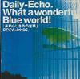
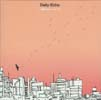
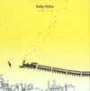
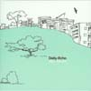
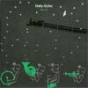

1st. 「素晴らしき青の世界」 1998. 4. 1 released
 |
1. 復活
2. メロドラマ
3. 自由への旅
4. 夕闇列車に乗って
5. Frames
6. ひまわりの咲く頃
7. 道端の花
8. 限りない世界
9. 安らぎの日々
10. 群青
|
|
|
2nd. March 1999. 3. 3 released (初回盤のみ、絵本つき）
|
1. 出鱈目な朝
2. 〜夢
3. 「街の音」（"March" Version）
4. ピアノタウン
5. 雨
6. グランド
7. 永遠の一日
8. マニア（"March" Version）
9. 黄色いバス
10. マーチ
11. 街をゆく（"March" Version）
12. 夢〜
13. メランコリー（"March" Version）
|
|
|
3rd. しあわせミュージック 2003. 9. 9 released
 |
1. さいわい
2. ドライフラワー
3. 翼
4. アルニカ
5. 過ぎ去った日々
6. メルヘン
7. しあわせミュージック
|
|
|
4rd. しあわせトレイン 2003.11.11 released
 |
1. 緑が吹いた
2. 新世界
3. ロードショウ
4. ワンダフル
5. 黄昏
6. しあわせトレイン
7. グットバイ
8. 緑が吹いた(reprise)
|
|
|
1st.(re-sale) 「素晴らしき青の世界」 2003. 9. 9 released
 |
1. 復活
2. メロドラマ
3. 自由への旅
4. 夕闇列車に乗って
5. Frames
6. ひまわりの咲く頃
7. 道端の花
8. 限りない世界
9. 安らぎの日々
10. 群青
-bonus tracks-
11. 薄明
12. わな
13. 雲
|
|
|
2nd.(re-sale) 「March」 2003.11.11 released
 |
1. 出鱈目な朝
2. 〜夢
3. 「街の音」
4. ピアノタウン
5. 雨
6. グランド
7. 永遠の一日
8. マニア
9. 黄色いバス
10. マーチ
11. 街をゆく
12. 夢〜
13. メランコリー
-bonus tracks-
14. ウォーター
15. 悲しみに暮れる街角
|
|